Sintence — бесплатный помощник для Лиги Легенд (LoL) под Windows. В выборе чемпиона он подсказывает сборки, руны и порядок прокачки и показывает ранги игроков лобби, а в матче — статистику поверх игры. Отдельно — мета чемпионов текущего патча и топ игроков сервера RU.
Десктопное приложение для Windows с оверлеем для League of Legends: табло живого матча, профили игроков лобби, советы по сборке для своего чемпиона и история матчей.
Скриншоты

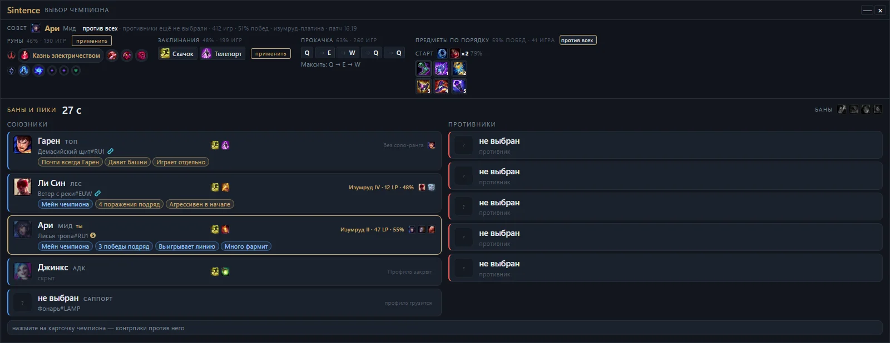

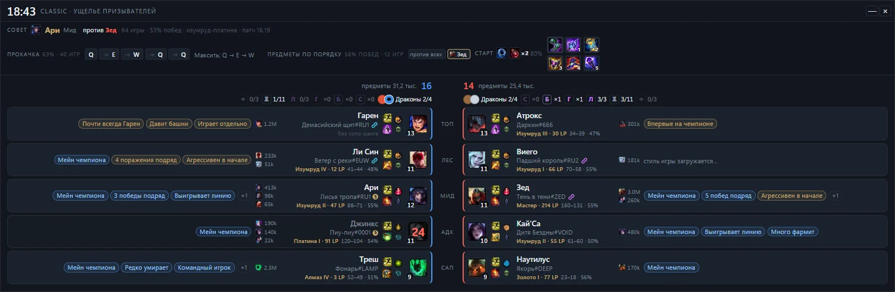

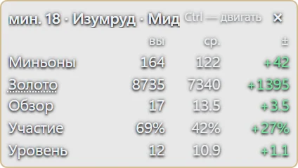

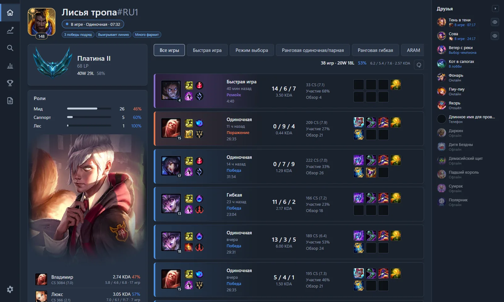

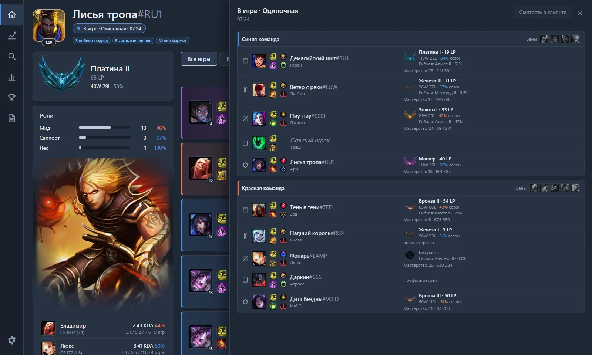

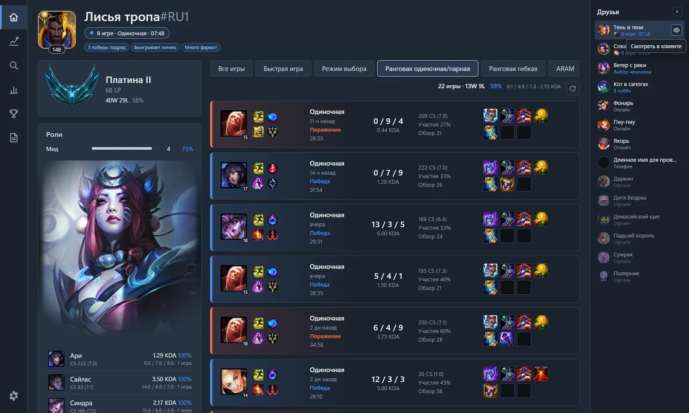

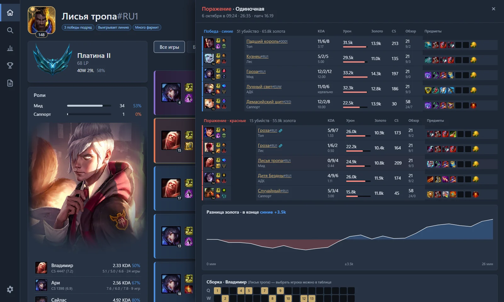

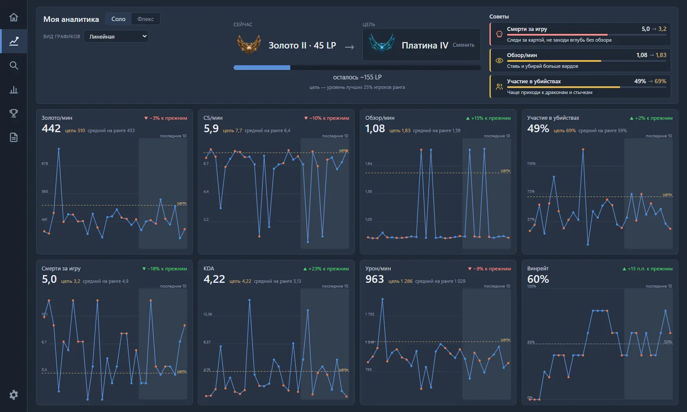

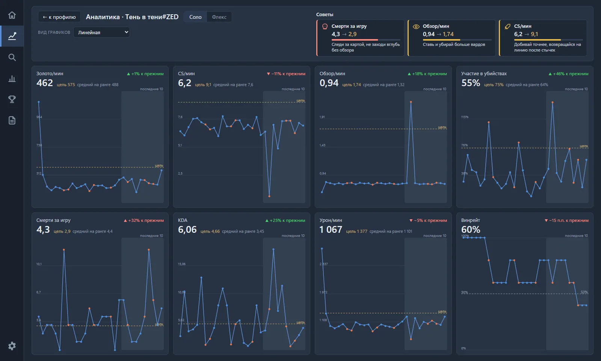

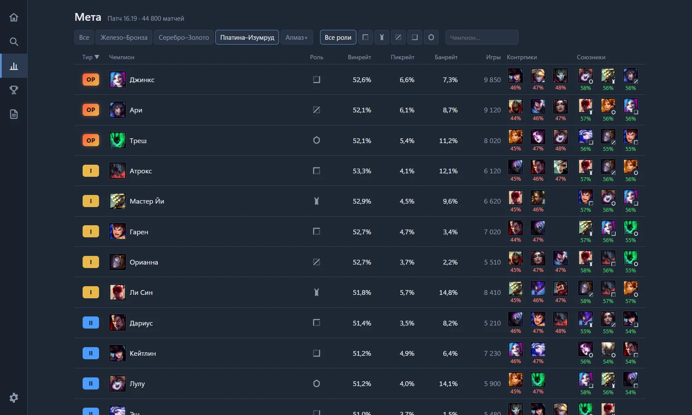

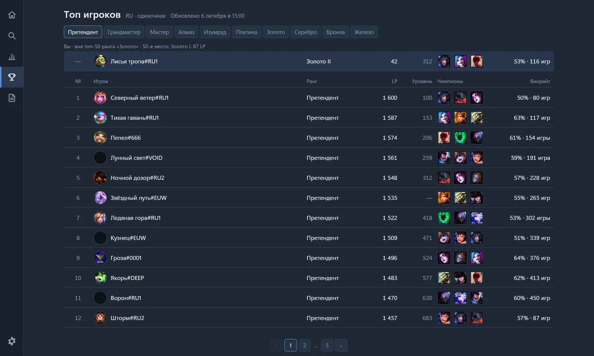

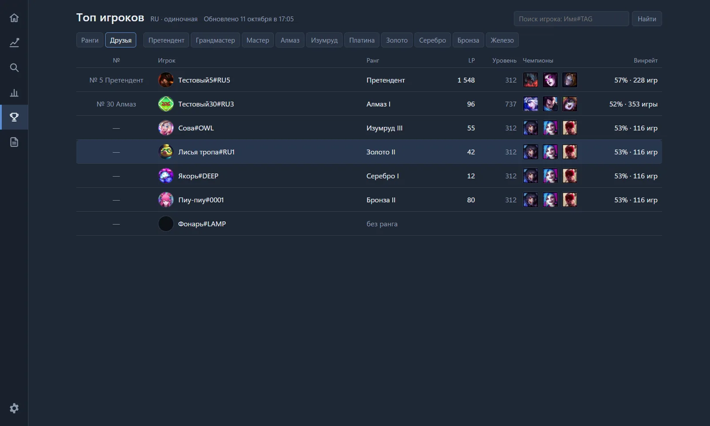

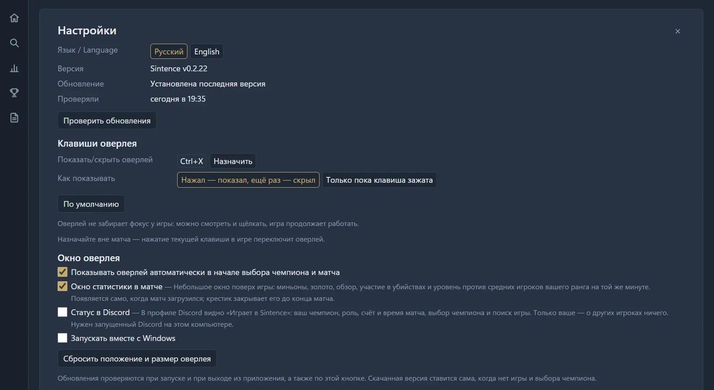
Возможности
Табло живого матча
Окно поверх игры с табло текущего матча. Данные — из официального Live Client Data API, который игра отдаёт локально: только то, что игрок и так видит в игре.
Профили игроков лобби
Ранг, мастери чемпионов и стиль игры по прошлым матчам — через Riot Games API.
Советы по сборке для своего чемпиона
Руны, заклинания призывателя, предметы и порядок прокачки — по статистике ранговых матчей.
Руны и заклинания — только по клику
Предложенная страница рун и заклинания попадают в клиент League только после нажатия кнопки игроком. Автоматически ничего не меняется.
История матчей
Ваши последние матчи с подробностями.
Окно статистики в матче
Небольшое окно во время матча по желанию: ваши миньоны, золото, обзор, участие в убийствах и уровень в сравнении со средними игроками вашего ранга и роли на той же минуте.
Текущая игра любого игрока
Обе команды с ролями, банами, заклинаниями, ключевыми рунами, рангом и мастерством.
Друзья
Друзья из клиента League со статусами; текущую игру друга можно открыть в Sintence.
Смотреть в клиенте
Игру друга можно смотреть в клиенте League.
Моя аналитика
Цель по рангу, графики по последним ранговым играм и советы.
Аналитика игрока
Аналитика любого игрока в сравнении с лучшими 25% его ранга.
Мета чемпионов
Тир-лист текущего патча по группам рангов и ролям: винрейт, пикрейт, банрейт, контрпики и союзники.
Топ игроков
Топ-50 игроков каждого ранга на сервере RU, обновляется раз в сутки; ваше место — над списком.
Поиск и друзья в топе
Поиск игрока в топе по нику и рейтинг друзей.
Чего Sintence не делает
- Не показывает скрытую информацию о противниках: кулдауны, таймеры, позиции.
- Не действует за игрока.
- Не внедряется в процесс игры и не читает его память.
- Уважает режим стримера: скрытых клиентом игроков не раскрывает, их профиль показывается как «Профиль закрыт».
Скачать
Sintence в закрытом тестировании. Открытое скачивание появится после того, как Riot Games одобрит продакшен-ключ API приложения. До этого доступ — тестировщикам по запросу: sintence.official@gmail.com.
Системные требования
- Windows 10 или 11, x64.
- Права администратора не нужны.
- Один portable exe.